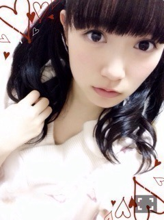
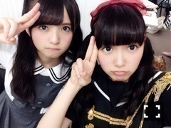
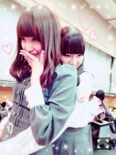
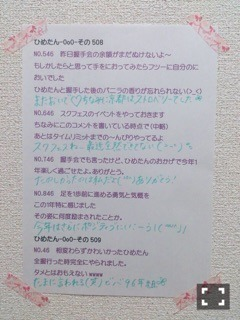
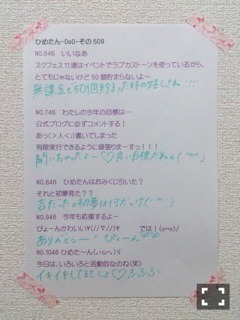

| 2015/03 24 Tue | ひめたん-OoO-その530 |

乃木坂46SHOW!
みなさん観ていただけましたか？
西武ドームの舞台裏と
新曲、乃木團のスタジオライブでした！
西武ドームの密着には
SKE48の柴田阿弥さんが
レポーターとして来てくださいました
寒い中、お忙しい中
ありがとうございました～＊
なんと、目からビームと
ひめたんびーむが初の共演を
果たしてしまいました(<・ω・>)♡
夢が叶いました♡♡
そして乃木團のスタジオライブ！
乃木團としてオファーが来るなんて
結成した時は考えもしなかったな
本当にありがたいことです( ˇωˇ )
ただ今絶賛成長中の乃木團。
もっともっとスキルアップして
いきたいなと思いますよろしくぅ！！
氣志團さんとの対バンライブや
西武ドームでお目にかかれなかった
みなさんにも
今回この乃木坂46SHOW!で
演奏を聴いていただけてよかった。
ありがとうございました！

そして日曜日はチェキ会もありました＊
アルバム特典イベント
来てくださったみなさん
ありがとうございました\( ˆoˆ )/
チェキ会も初めてだけどいいね～
ひめのレーンはやっぱり
びーむが一番多かったかな？
みんなポーズ考えてきてくれたので
撮影もスムーズだったし
お話も出来て充実したイベントだった♡
関東でのイベントは
そういえば久々だったので
話したいこといっぱいあったね～
時間足りなかった分はまた
握手会やコメントで聞かせてね！


さらに今日は
「おどる！うたう！大卒業式！」
来てくれたみんなありがとう、そして
卒業おめでとう（ ˆoˆ ）
これは高校を卒業した方限定の
ライブということで、ひめも同じだね！
今日はステキな思い出になったかな？
氣志團さんと乃木坂46が
出演したライブでした、が
私は乃木坂46としてではなく
乃木團として参加させていただきました
なんとサプライズだったんですね～！
これまで乃木團としてのライブは
何度か経験させていただきましたが
今日は氣志團×乃木團のセッション！！
一緒に歌わせていただくというのは
初めてのことでした......。
氣志團さんとのセッションなんて
こんなことがあって良いのでしょうか。
乃木團はもともと
氣志團さんとの対バンライブのお話を
頂いた際に結成したバンドなので
約1年を経た今、またこうして
同じステージに立てたことも
すごく嬉しかったですし
またたくさんのことを学びました！
私なんかがおこがましい話ですが
曲の前に翔さんと
ガン飛ばし合いしましたよ(´,,•ω•,,｀)
ツッパって腕組んだりして
バチバチしたんだけど
今思えばびーむすればよかったな(笑)

まあやが乃木のので教えてくれた
口のまわりに手を持って来たがる
われのクセ
2年ぶりに生誕Tシャツを
デザインしました！
乃木坂46オフィシャルグッズとして
4月生まれのまあやと私の
デザインTシャツが予約受付中☆
まあやとひめは
広島コンビだけではなくて
実は4月生まれコンビでもあるんだよね
ぜひチェックしてみてね～＊
ソニレコTV、のぎ天、乃木どこも
よかったら観てみてください
乃木どこは次回
中3組の休日だよ\( ˆoˆ )/
普段は仲良しな3人なんだけど
この3ショットみなさんには
ちょっと新鮮かもしれない♡
でも仲の良さ伝わると思う♡♡

ずーさん♡♡

 ひめたんはマスキングテープ
ひめたんはマスキングテープ
いくつくらい持ってるの？
20個くらい？
マスキングテープボックスがあるよ！
りぼんほどではないけどね(＊^v^＊)
ひめたんは4月から頑張りたいこと
ってある??
料理できるようになりたい！
最近はチョコスコーン作ったよ♡♡
今欲しい春アイテムとかある？？
ロングカーディガン。
グレーをゲットしたんたけど、
便利だからアイボリーも買おうかな
って思ってるの。あとスニーカー！
どうやったら緊張がほぐれますか？
ひめたんなりでいいんで教えて下さい
「人」って3回書いて飲み込む！笑
古典的だけど、小さい頃から
やっているので習慣というか
本番前これやんないと落ち着かない(笑)
乃木團でやってみたい曲は
なんですか？？
みなさん何聴いてみたい？
レパートリーもっと増やしたいな。
ひめたんの日記の
コメント欄下２ケタに46を踏んだ方へ
手書きでコメ返するコーナー
＼ ひめたん46 ／



いつもたくさんのコメント
ありがとうございます( ˇωˇ )
日記でお仕事のことたくさん
お話できるの嬉しい♡
最近毎日充実してる！
そういえば今日のMCの中でもあったり
最近いろんな友達から話聞くのが
卒業旅行のこと。
みなさん卒業旅行とか
経験ありますか(´,,•ω•,,｀)？
なんかエピソードあったら聞きたいな
ひめ、この春は行けそうにないから
みなさんの話聞きたい♡
(＊´・ω・＊)
コメント(1051)
2015/03/24 23:54